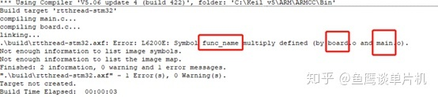
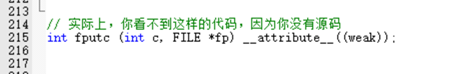
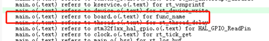
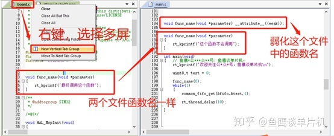
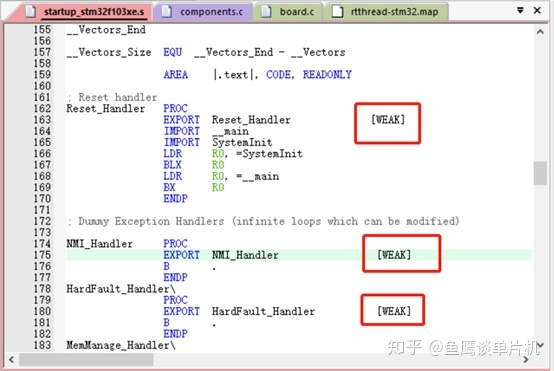

很多人在用printf函数进行串口打印的时候，都会被告知需要重定向fputc函数（别的平台可能不是这个函数），让字符串数据输出到指定串口，按照网上的教程也能很快解决。但是却没人告诉你为什么可以被重定向，为什么明明使用的是printf函数，重定向的却是fputc函数？
使用51的时候，我们也可以使用printf函数，但是我们并没有进行重定向，也能使用，这又是为什么？
对于经验丰富的人来说，这些问题心里应该都有答案，但考虑到有一些道友可能并不了解，所以今天就稍微水那么一篇吧。
这些问题从大一到大三，一直困惑着鱼鹰，直到鱼鹰在代码中看到这么个东西：
__attribute__((weak)) // 注意两个括号
鱼鹰一看，没见过啊，不懂啊，所以鱼鹰赶紧去网上查了一下，不查不要紧，一查吓一跳，发现__attribute__这个东东了不得啊，很多C语言属性都能修改，功能实在是太强大了，强大到鱼鹰自认为掌握得不错的C语言都还只是基础，也就只配在小白面前嘚瑟一下。
言归正传，为了突出重点，今天只讲 weak 属性，以防分心。
我们都知道，函数名不可以重名，当然不同文件内声明的 static 函数倒是可以解除该限制（可查看《C语言之 static》）。
但是如果没有使用 static ，那么编译器就会给你报错，告诉你函数名重复咯。

编译器一共告诉你两个信息：
1、重复的函数名是 func_name
2、重复的地方在 board.c 和 main.c 文件里面（后面 .o 表示目标文件，由对应的 .c 文件生成）
编译器一发出这样的信息，程序员很快就能找到问题并解决，所以看懂编译信息很重要（如果有些编译信息不常见，复制这条信息到网上一搜，一大堆文章就冒出来了）。
根据错误信息，只要修改一处变量名，即可消除该错误。
那么这个和printf重定向有什么关系？
我们知道，printf 最终会调用 fputc 进行字符串输出，但是这些函数是标准库提供的，而标准库没有提供源码给你，当你需要用的时候添加 <stdio.h> 即可。
但是很多时候，fputc 输出的位置可能需要改变，比如输出到 LCD、串口1、串口2，我们总不可能去修改标准库的源码吧，但也没有源码提供啊，怎么才能在不修改源码的情况下满足这个需求呢？
方法是有的，比如你可以通过某个函数向printf中注册一个回调函数，让printf调用这个回调函数进行字符串输出即可，但是标准库并没有提供这个东西，因为它用了更好的方式解决这个问题。
那就是本文的主角，符号属性弱化，weak。
假设我们拿到了标准库的源码，能清楚的看到实现原理，那么我们应该能看到一个fputc的函数。然后你通过分析原理，发现它的输出位置不是自己想要的，那么你会怎么做？
既然有源码，好办，直接修改fputc的实现即可，简单。
但现在没有源码，怎么办？但你发现你在自己的源文件里面直接实现fputc函数好像也没事，为什么？就是因为标准库将fputc函数的属性进行了弱化，即：

这样做有什么好处？
1、别人可以不需要给你源码
2、即使没有源码，也能间接的达到修改源码的目的
3、即使有源码，通过该属性设置，也不需要删除别人的代码去重新实现，可以保留原来的代码。
4、不需要使用回调函数的方式进行注册，可以直接重新实现该函数，非常简单
5、存在一个默认函数实现，如果说你不想重新实现函数，那么编译器就会使用该函数进行编译、链接，而不会在编译时出现错误或警告（这就是为什么即使你没有重新写一个fputc，编译也不会报错的原因）
当然，第五点，既是好处也是坏处，因为编译器没有提示，你就不知道你到底有没有重新实现函数了。
其实要查看编译器链接的到底是哪一个函数很简单，打开map文件（关注了这么久，怎么打开的就不多说了），搜索对应的函数名即可：

你会发现，虽然 main.c 文件中虽然也有一个 func_name 函数，但实际上，编译器链接的是 board.c 文件的，原因就是因为 main.c 文件的 func_name 函数属性被弱化了。

这样一来，即使函数 func_name 在 main() 函数中被调用，但它没有使用本文件的func_name，而是调用了 board.c 文件中的函数。
但你将 board.c 文件中的函数删掉后，编译后并不会出现错误，并且会发现 main() 调用的函数变成了 main.c 文件中的函数。
就是这么奇妙！
事实上，这个属性弱化不仅仅在 printf 函数中体现了，在中断处理函数中也做了这样的处理，只不过这是汇编方式：

这就是为什么你可以在任何文件内写中断处理函数，而即使你没有写中断处理函数，编译器也不会报错的原因！
当然了，这种属性设置虽然可以保证不同文件的函数名可以相同（同一个文件的函数名还是不可以相同），但是最终只有一个函数会被编译器所链接！
哦，对了，如果你要实现多个不同的串口打印输出，不如使用 vsprintf（建议 vsnprintf），好处就是这个函数的输出位置不是fputc，而是你给定的缓存空间，这样你就可以实现自己的printf函数了。